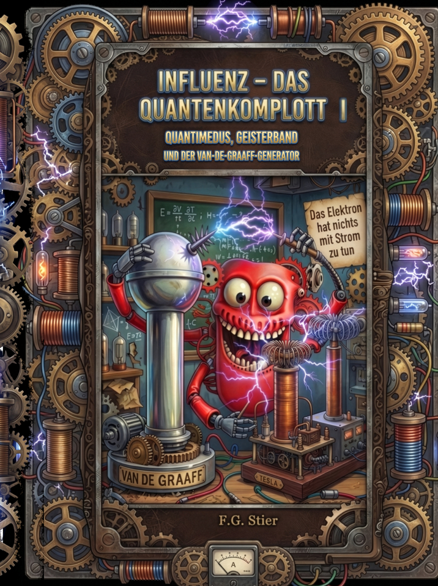
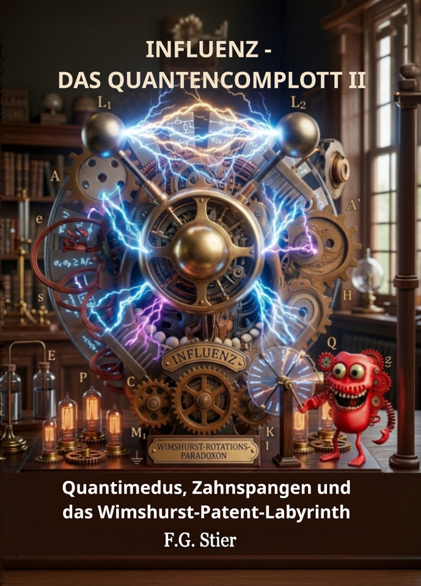
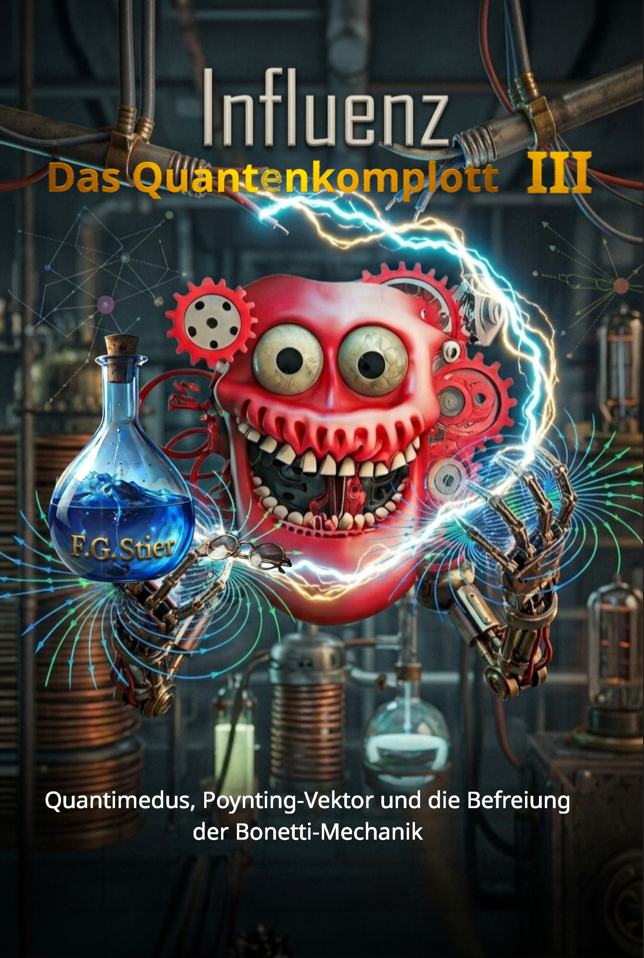
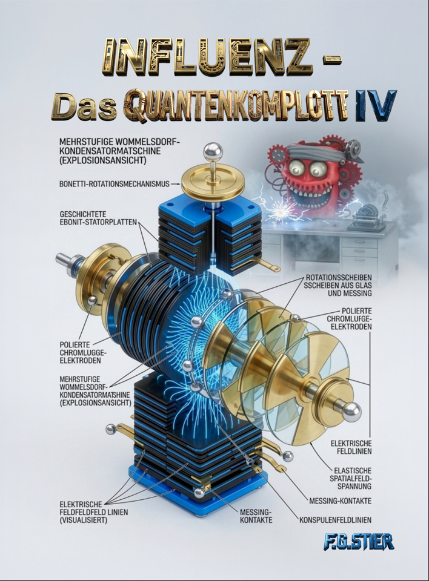

// MOUSE HOVER ZUM STOPPEN // KLICK AUF EIN COVER ÖFFNET DAS VIDEO DIREKT //
SEKTOR_3D // KINETISCHES Quantimedus-KARUSSELL
GESAMT: 4 WERKE

Quantimedus erforscht die Van-de-Graaff-Influenzmaschine F.G. Stier

F.G. Stier Die Quanten und Quantimedus mit der Wimshurstmaschine

Warum die Quantenphysik nur ein Konstrukt ist

Die Quanten, die Elektronen und der Stromfluss - Der Code hinter der Materie